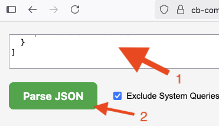

Step 1: Extract Query Data
Run this query in Couchbase Query Workbench or cbq:
SELECT *, meta().plan FROM system:completed_requests LIMIT 4000;
Notes: This could return a JSON of about 36MB. Anything larger may crash the browser. Firefox renders data the fastest.
Browser is slow/crashes: Reduce data size via LIMIT 2000.
Step 2: Access Hosted Tool
Language-Specific Links:
 Firefox renders data the fastest.
Firefox renders data the fastest.
Step 3: Paste & Analyze
Copy the JSON output from Step 1 and paste it into the Upper Left text box, then click the Parse JSON button.

Step 4: Filter and Index Analysis (Optional)
Filter by Date Range:
- Auto-population: Date fields populate with your data's full time range.
- Custom filtering: Adjust "From" and "To" dates or filter by specific SQL++ query terms.
- Re-analyze: Click Parse JSON to apply filters.
- Filter status: View the number of queries matching your criteria.
Enhanced Index Analysis:
To retrieve the current list of indexes in your cluster and connect them to slow queries, run the query below in your workbench (as in Step 1). Paste the JSON output into the upper right text box.
SELECT
s.name,
s.id,
s.metadata,
s.state,
s.num_replica,
CONCAT("CREATE INDEX ", s.name, " ON ", k, ks, p, w, ";") AS indexString
FROM system:indexes AS s
LET bid = CONCAT("", s.bucket_id, ""),
sid = CONCAT("", s.scope_id, ""),
kid = CONCAT("", s.keyspace_id, ""),
k = NVL2(bid, CONCAT2(".", bid, sid, kid), kid),
ks = CASE WHEN s.is_primary THEN "" ELSE "(" || CONCAT2(",", s.index_key) || ")" END,
w = CASE WHEN s.condition IS NOT NULL THEN " WHERE " || REPLACE(s.condition, '"', "'") ELSE "" END,
p = CASE WHEN s.`partition` IS NOT NULL THEN " PARTITION BY " || s.`partition` ELSE "" END;
Example Index Query Output:
[{
"name": "#primary",
"id": "acd3909da629f840",
"metadata": {
"last_scan_time": "2025-02-26T08:39:39.681-08:00",
"num_replica": 0,
"stats": {
"last_known_scan_time": 1740587979681244700
}
},
"state": "online",
"indexString": "CREATE INDEX #primary ON customer_addresses;"
}]
Example: Paste index query results JSON into the Upper Right text input box and click Parse JSON.
Step 5: Download the Tool (Optional)
If you prefer to use the tool locally, download the index.html pages:
Feature List & Release Notes
https://github.com/Fujio-Turner/cb_completed_request